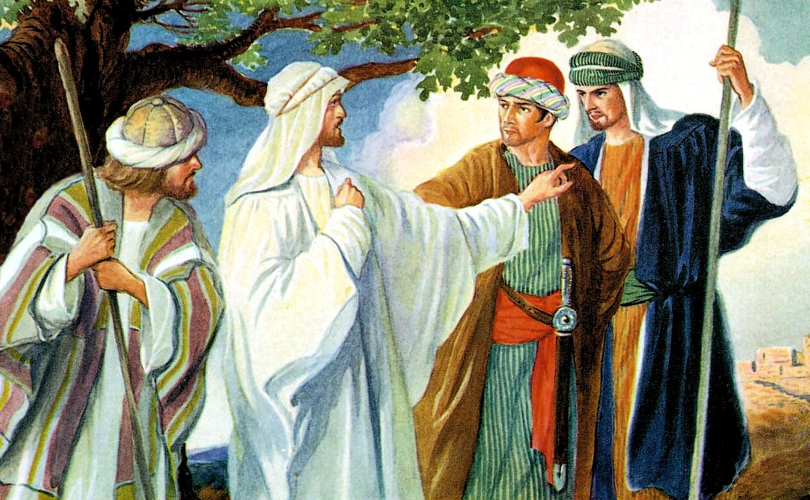

Leitura Orante
Leituras do Dia
Domingo - 27º domingo do tempo comum
(Verde -Ofício do dia )
4 de outubro de 2020
Leitura Orante do Evangelho
Ouça o áudio da oração e reflexão do padre
Francisco das Chagas


Oração do dia
Ó Deus eterno e todo-poderoso, que nos concedeis, no vosso imenso amor de Pai, mais do que merecemos e pedimos, derramais sobre nós a vossa misericórdia, perdoando o que nos pesa na consciência e dando-nos mais do que ousamos pedir. Por Nosso Senhor Jesus Cristo, Vosso Filho, na unidade do Espírito Santo.
Leitura: Jó 19,21-27
1Vou cantar para o meu amado o cântico da vinha de um amigo meu: um amigo meu possuía uma vinha em fértil encosta. 2Cercou-a, limpou-a de pedras, plantou videiras escolhidas, edificou uma torre no meio e construiu um lagar; esperava que ela produzisse uvas boas, mas produziu uvas selvagens. 3Agora, habitantes de Jerusalém e cidadãos de Judá, julgai a minha situação e a de minha vinha. 4O que poderia eu ter feito a mais por minha vinha e não fiz? Eu contava com uvas de verdade, mas por que produziu ela uvas selvagens? 5Pois agora vou mostrar-vos o que farei com minha vinha: vou desmanchar a cerca, e ela será devastada; vou derrubar o muro, e ela será pisoteada. 6Vou deixá-la inculta e selvagem: ela não será podada nem lavrada, espinhos e sarças tomarão conta dela; não deixarei as nuvens derramar a chuva sobre ela. 7Pois bem, a vinha do Senhor dos exércitos é a casa de Israel, e o povo de Judá, sua dileta plantação; eu esperava deles frutos de justiça – e eis injustiça; esperava obras de bondade – e eis iniquidade. – Palavra do Senhor.
Salmo Responsorial: 79(80)
A vinha do Senhor é a casa de Israel.
Arrancastes do Egito esta videira e expulsastes as nações para plantá-la; até o mar se estenderam seus sarmentos, até o rio os seus rebentos se espalharam.
A vinha do Senhor é a casa de Israel.
Por que razão vós destruístes sua cerca, para que todos os passantes a vindimem, o javali da mata virgem a devaste e os animais do descampado nela pastem?
A vinha do Senhor é a casa de Israel
Voltai-vos para nós, Deus do universo! Olhai dos altos céus e observai. Visitai a vossa vinha e protegei-a! Foi a vossa mão direita que a plantou; protegei-a, e ao rebento que firmastes!
A vinha do Senhor é a casa de Israel.
E nunca mais vos deixaremos, Senhor Deus! Dai-nos vida, e louvaremos vosso nome! Convertei-nos, ó Senhor Deus do universo, e sobre nós iluminai a vossa face! Se voltardes para nós, seremos salvos!
A vinha do Senhor é a casa de Israel.Segunda Leitura: Filipenses 4,6-9
Irmãos, 6não vos inquieteis com coisa alguma, mas apresentai as vossas necessidades a Deus, em orações e súplicas, acompanhadas de ação de graças. 7E a paz de Deus, que ultrapassa todo entendimento, guardará os vossos corações e pensamentos em Cristo Jesus. 8Quanto ao mais, irmãos, ocupai-vos com tudo o que é verdadeiro, respeitável, justo, puro, amável, honroso, tudo o que é virtude ou de qualquer modo mereça louvor. 9Praticai o que aprendestes e recebestes de mim ou que de mim vistes e ouvistes. Assim o Deus da paz estará convosco.– Palavra da Salvação.
Evangelho: Mateus 21,33-43
Naquele tempo, Jesus disse aos sumos sacerdotes e aos anciãos do povo: 33“Escutai esta outra parábola: certo proprietário plantou uma vinha, pôs uma cerca em volta, fez nela um lagar para esmagar as uvas e construiu uma torre de guarda. Depois, arrendou-a a vinhateiros e viajou para o estrangeiro. 34Quando chegou o tempo da colheita, o proprietário mandou seus empregados aos vinhateiros para receber seus frutos. 35Os vinhateiros, porém, agarraram os empregados, espancaram a um, mataram a outro e ao terceiro apedrejaram. 36O proprietário mandou de novo outros empregados, em maior número do que os primeiros. Mas eles os trataram da mesma forma. 37Finalmente, o proprietário enviou-lhes o seu filho, pensando: ‘Ao meu filho eles vão respeitar’. 38Os vinhateiros, porém, ao verem o filho, disseram entre si: ‘Este é o herdeiro. Vinde, vamos matá-lo e tomar posse da sua herança!’ 39Então agarraram o filho, jogaram-no para fora da vinha e o mataram. 40Pois bem, quando o dono da vinha voltar, o que fará com esses vinhateiros?” 41Os sumos sacerdotes e os anciãos do povo responderam: “Com certeza mandará matar de modo violento esses perversos e arrendará a vinha a outros vinhateiros, que lhe entregarão os frutos no tempo certo”. 42Então Jesus lhes disse: “Vós nunca lestes nas Escrituras: ‘A pedra que os construtores rejeitaram tornou-se a pedra angular; isso foi feito pelo Senhor e é maravilhoso aos nossos olhos’? 43Por isso eu vos digo, o Reino de Deus vos será tirado e será entregue a um povo que produzirá frutos”.– Palavra da Salvação.
Leituras do mês
TAGS
missao Amazonia evengel covid-19 indigenas novica papa francisco
Destaques
Província Stella Matutina
Rua São Benedito, 2146 - Santo Amaro - São Paulo - SP |
Tel. (11)
5547-7222


Província Spiritus Divinae Sapientiae
Rua Arnaldo Janssen, 320 - Cara-Cara - Ponta Grossa - PR |
Tel. (42) 3326 4091